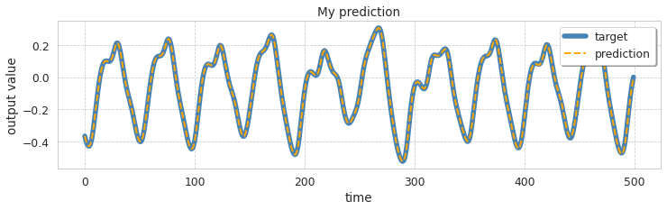
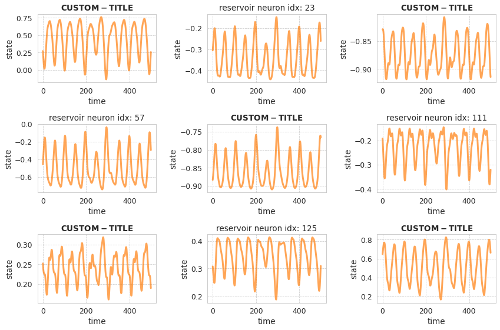

Visualization of reservoir neurons activity¶
This example shows how to access the time series of the reservoir neurons activity during the prediction phase.
We use the ESNGenerator model as a pattern generator that learns to predict future steps of the chaotic time series Mackey-Glass Then we plot some randomly picked neurons from the reservoir.
import numpy as np
from sklearn.model_selection import train_test_split
from echoes import ESNGenerator
from echoes.datasets import load_mackeyglasst17
from echoes.plotting import (
set_mystyle,
plot_reservoir_activity,
plot_predicted_ts
)
set_mystyle() # just aesthetics
# Load data and define train/test length
data = load_mackeyglasst17().reshape(-1, 1)
n_train_steps, n_test_steps = 2000, 2000
n_total_steps = n_train_steps + n_test_steps
y_train, y_test = train_test_split(
data,
train_size=n_train_steps,
test_size=n_test_steps,
shuffle=False
)
# Instantiate model
esn = ESNGenerator(
n_reservoir=200,
n_steps=n_test_steps,
spectral_radius=1.25,
feedback=True,
leak_rate=.4,
regression_method="pinv",
store_states_pred=True, # store states to plot later
random_state=42,
).fit(None, y=y_train)
prediction = esn.predict()
ax = plot_predicted_ts(
y_test,
prediction,
end=500,
figsize=(12, 3)
)
# We can customize the plot
ax.set_title("My prediction")
ax.legend(loc=1, fancybox=True, shadow=True)

# Pick 9 random neurons to plot
neurons_to_plot = sorted(np.random.randint(0, esn.n_reservoir, size=9))
# This plots the activity and return the fig object for finetuning
fig = plot_reservoir_activity(
esn,
neurons_to_plot,
pred=True, # plot activity during prediction
end=500,
figsize=(12, 8),
color="tab:orange",
alpha=.7
)
# Optional finetuning
for i, ax in enumerate(fig.axes):
if i % 2 == 0:
ax.set_title("$\\bf{CUSTOM-TITLE}$")
